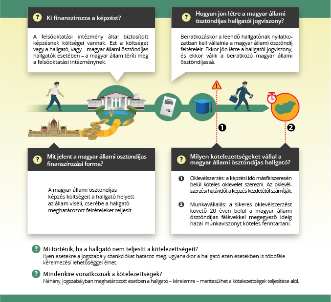

Végzettség - Egyenértékűség - Ösztöndíj - Kreditelismerés
A felsőoktatás egymásra épülő, felsőfokú végzettségi szintet biztosító képzési ciklusai az alapképzés, a mesterképzés és a doktori képzés. Ezek mindegyike felsőfokú végzettségi szintet jelent. Alapképzésben alapfokozat, mesterképzésben és osztatlan képzésben (ez utóbbi az alapképzési és mesterképzési szakasz kettéosztás nélküli együttesét jelenti) mesterfokozat, doktori képzésben doktori fokozat szerezhető.
A felsőoktatási képzéstípusok közül az alapképzés, a mesterképzés (és az osztatlan képzés), valamint a doktori képzés vezet felsőfokú végzettségi szinthez, mely szintek különbözőek és egymásra épülnek. Vannak azonban a felsőoktatásba tartozó olyan képzéstípusok is, amelyek elvégzésével nem szerezhető felsőfokú végzettségi szint. A felsőoktatási szakképzés – az alapképzéssel egyezően – érettségire épül, elvégzésével azonban csak felsőfokú (azaz nem a szakképzésbe tartozó) szakképzettség szerezhető, de felsőfokú végzettségi szint nem. A szakirányú továbbképzés a felsőfokú végzettséggel (alapfokozattal vagy mesterfokozattal) már rendelkezők számára elérhető (ún. posztgraduális) képzéstípus, melyben szintén felsőfokú szakképzettség szerezhető, de nem változtatja (emeli) meg a képzést elvégző végzettségi szintjét.
Szakképzettség a felsőoktatási képzéstípusok közül alapképzésben, mesterképzésben (ideértve az osztatlan képzést is), felsőoktatási szakképzésben és a szakirányú továbbképzésben szerezhető.
A felsőoktatatás oklevélhez (melyet hétköznapi nyelvben diplomának hívnak) vezető képzéstípusai az alapképzés, a mesterképzés (ideértve az osztatlan képzést is), a doktori képzés, a felsőoktatási szakképzés és a szakirányú továbbképzés. Az oklevél (diploma) ellenére a felsőoktatási szakképzés és a szakirányú továbbképzés nem jelenti felsőfokú végzettségi szint megszerzését.
Különböző felsőoktatási képzések között azonosságot, egyenértékűséget megállapítani csak abban az esetben lehetséges, ha ezt jogszabály mondja ki. Ha nincs olyan jogszabály, amely két különböző képzés egyenértékűségét kimondaná, akkor ez nem jelenthető ki. Ebben az esetben a hallgató által tanultak igazolására szolgáló dokumentumok lehetnek: oklevélmelléklet, leckekönyv, törzslapkivonat, kreditigazolás stb.
Működés:
A képzés kreditértéke legalább harmadának az adott intézmény adott képzésén történő megszerzésére vonatkozó előírást nem kell alkalmazni:
| doktori képzés |
| az Európai Unió, a Visegrádi Alap és a Közép-európai Felsőoktatási Csereprogram által finanszírozott programok keretében megvalósuló közös képzés |
| felsőoktatási intézmény megszűnése esetén a hallgatókat átvevő másik felsőoktatási intézménnyel kötött megállapodás alapján ugyanazon képzési terület szerinti szakra átvett hallgató és |
| ugyanazon szakra felvett korábbi hallgató |
| menekült, oltalmazott, menedékes, befogadott hallgató esetében |
A kreditátviteli bizottság személyes adatokat nem tartalmazó pozitív döntéseit és azok érvényességi idejét, továbbá a felsőoktatási intézmény összes kurzusának, moduljának tárgyleírását a tanulmányi rendszerében minden hallgató és oktató számára hozzáférhetővé és a többi felsőoktatási intézmény tanulmányi rendszere számára letölthetővé kell tenni.